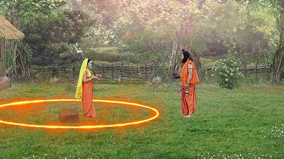
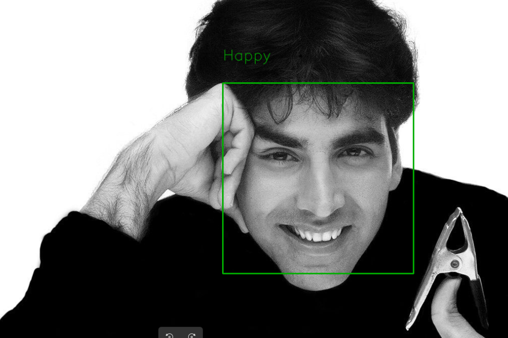
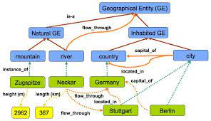
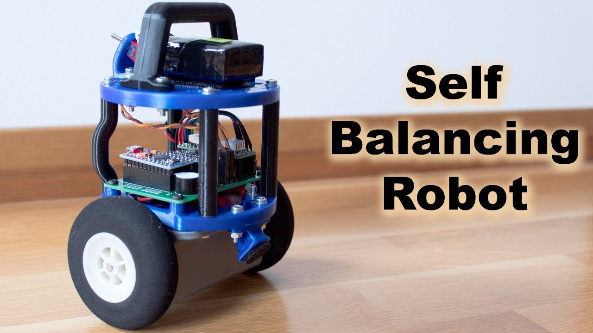
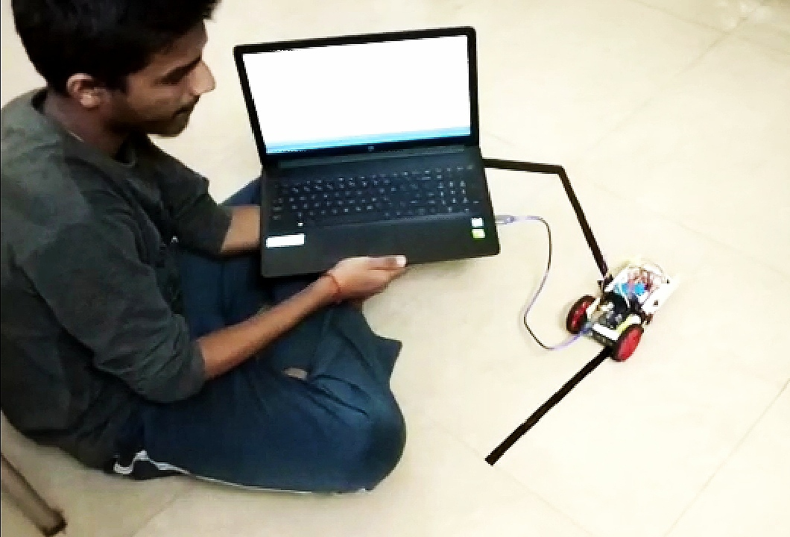

VISION
0.0% MATCH
Face Recognition
Detects and recognizes faces in the same breath, in real time — no "hang on, let me check" required.
COMPUTER VISION · SIGNAL PROCESSED
Detects faces, flags intrusions, follows lines — and occasionally rhymes.
SUBJECT_01 · CLASS: HUMAN · STATUS: SMILING · CONF 99.2%
Three years into computer vision and I've learned the machines are better at spotting faces than I am at spotting deadlines.
I build systems that detect, recognize, and predict in real time — the kind of work where "close enough" gets you fired and "99%" gets you a good night's sleep.
I've done this at Metafusion, Awiros, and Bobble AI — three very different rooms, one recurring theme: teach a model to notice something a human would've missed, then ship it before anyone notices you. Vision, NLP, the occasional robot. All of it, eventually, comes down to the same question — what's actually in this frame, and what do we do about it.
Before any of that, I was President of IRIS, our robotics club, which mostly meant convincing a room of very smart people to build things that balanced, followed lines, and didn't catch fire. Leadership, it turns out, is just debugging with more people involved.
Off the clock, I play percussion, write poetry, and draw characters that will never appear in a dataset. Call it my analog fallback — for when the model's confident and I'm not.
“Every model learns to look closer. I'm just trying to learn the same.”
Nine problems, nine models, one running theme: teach a machine to notice something worth noticing.
Detects and recognizes faces in the same breath, in real time — no "hang on, let me check" required.
A real-time detector that spots, sorts, and tracks packages so nobody has to count boxes by hand again.

VISION 0.0% MATCHA real-time system that flags intrusions with 99% accuracy — the 1% keeps me humble.

VISION 0.0% MATCHReads a face and sorts it into one of seven emotions, faster than most people read a room.
A CNN trained on one simple question: is this person actually smiling, or just tolerating the camera.
An NLP model that predicts your next word before you've fully committed to it — typing, sped up.

NLP 0.0% MATCHA deep learning model that maps how words in a sentence actually relate — grammar, minus the guesswork.

ROBOTICS 0.0% MATCHA two-wheeled robot that stays upright through sheer feedback-loop stubbornness.

ROBOTICS 0.0% MATCHAn infrared-guided bot that tracks a black line without ever asking for directions.
NO ENTRIES DETECTED — WRITING QUEUE: 0
Nothing published yet — the drafts folder is basically a bounding box around good intentions. Detection pending; recognition to follow.
Got a project, a question, or a strong opinion about neural nets — this is where that conversation starts.